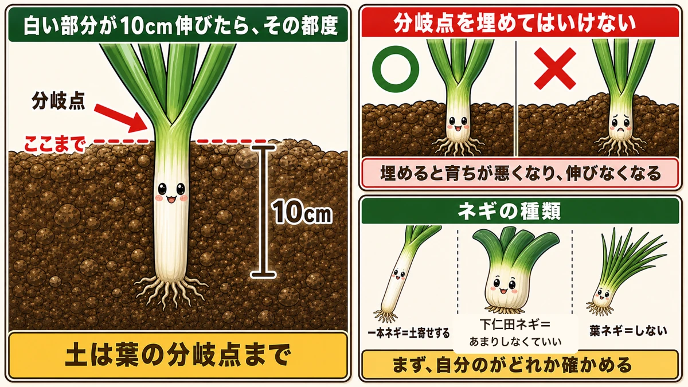
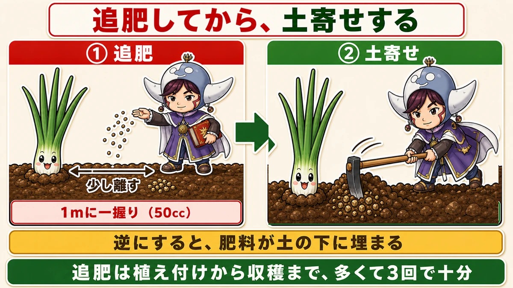
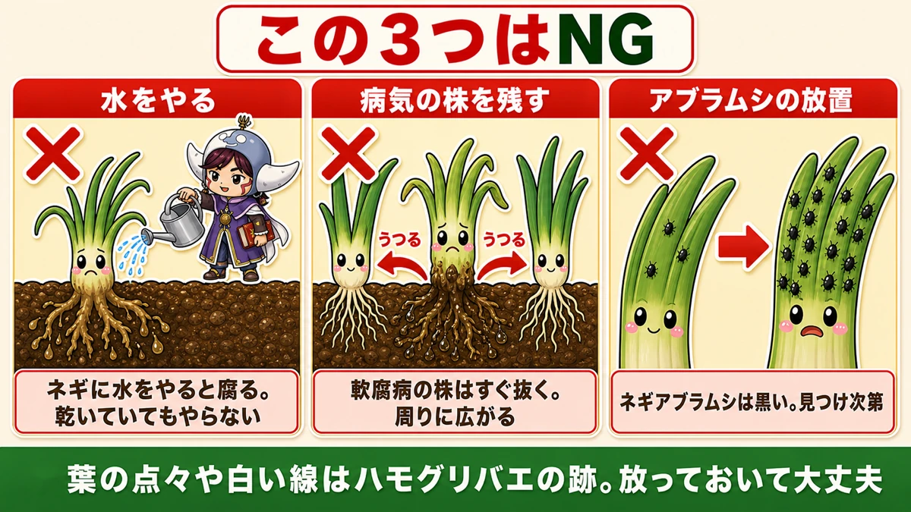
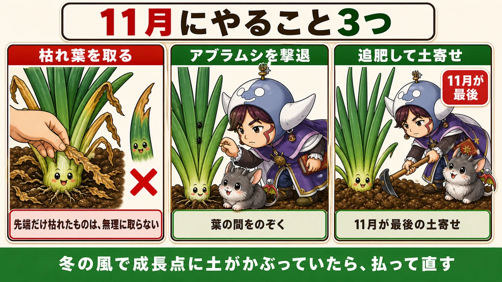
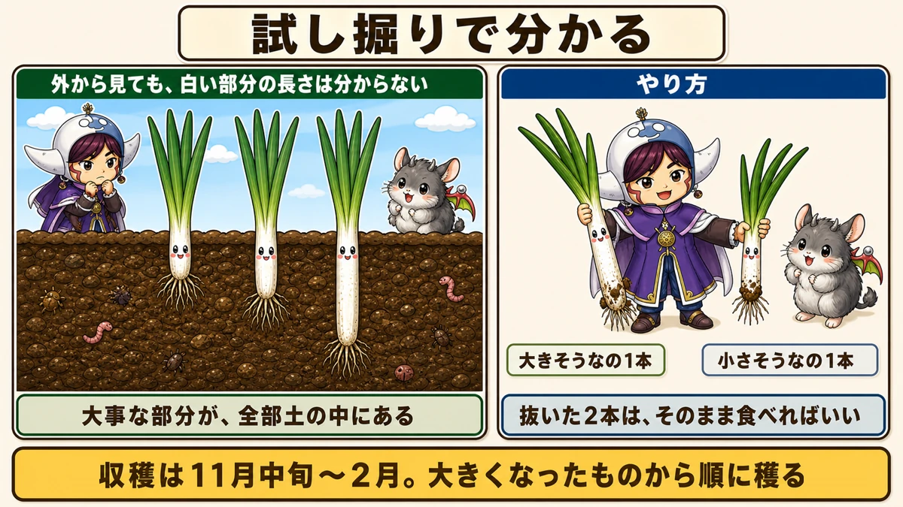
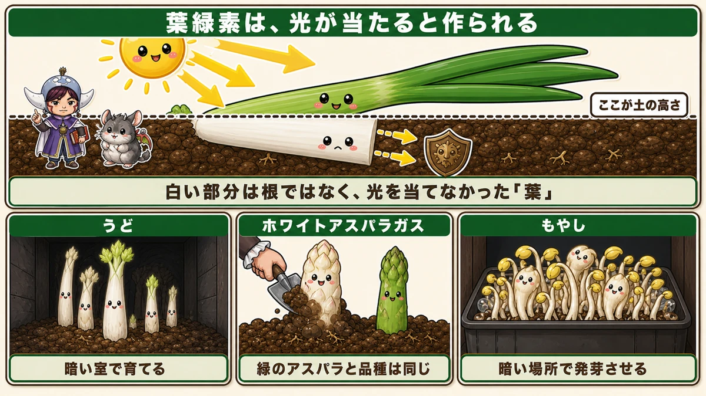

ネギの白いところは、土をかけて作ります🧅 11月が最後の土寄せ

🗨️「ネギを植えたけど、青いところばかりで白くならない」
🗨️「土寄せって、いつ・どのくらいやればいいの？」
🗨️「そろそろ穫っていいのか、外から見て分からない」
どうも、8150（えいこう）です🌱 家庭菜園歴8年、理科の教員免許を持っていて、有機・無農薬で野菜を育てています。
今回はネギの話です。
先に、この記事でいちばん言いたいことを言っておきますね。
ネギの白いところは、土をかけて作ります。
これ、知らないと一生白くなりません。
白い部分は、品種で決まっているわけでも、地面の下だから自然にそうなるわけでもないんです。人が土をかけて、光を遮った結果です。
つまり、土寄せをしなければ、青い部分ばかりのネギになります。そして11月が、その最後のチャンスです。
📖 この記事の目次
育てる①：土寄せは「10cm伸びたら」

まず、いつやるか。
★白い部分が10cm伸びたら、そのつど土をかける。
これがルールです。カレンダーで決めるのではなく、ネギを見て決めます。
伸びる → かける → また伸びる → またかける。この繰り返しで、白い部分がどんどん長くなっていきます。
回数の目安は、植え付けから収穫までに3回くらい。そして★11月が最後の土寄せになります。
どこまでかけるか
これが、この記事でいちばん大事なところです。
ネギをよく見ると、葉が左右に分かれ始めるところがありますよね。ここを分岐点と呼びます。
★土は、この分岐点まで。
そして、ここからが本題です。
★分岐点そのものを、絶対に埋めないでください。
埋めてしまうと、育ちが悪くなります。伸びなくなります。せっかく手をかけたのに、逆効果になる。
「白いところを長くしたい」と思うと、つい高くかけたくなります。私も一度やりました。良かれと思って分岐点まで土をかぶせたら、その株だけ明らかに成長が止まりました。
ぎりぎりまで、でも埋めない。ここだけ気をつけてください。
ネギの種類で変わります
- 一本ネギ（根深ネギ）… 土寄せが必要です。この記事の話は主にこちら
- 下仁田ネギ … あまり土寄せをしなくても育ちます
- 葉ネギ（九条ネギなど）… 緑の部分を食べるので、土寄せは不要
自分が育てているのがどれか、まず確かめてください。下仁田ネギに一生懸命土をかけていた、というのはよくある話です。
育てる②：追肥は「多くて3回」

順番があります。
★追肥をしてから、土寄せをする。
逆にすると、せっかくの肥料が土の下に埋まってしまいます。
量とやり方
- 回数は★植え付けから収穫まで、多くて3回で十分
- ★株元から少し離した場所に
- ★1mあたり一握り（およそ50cc）
私は鶏ふんを使っています。両サイドにパラパラとまいて、そのまま土をかける。これで1回分が終わります。
ネギは意外と欲張らない野菜です。肥料をたくさんやったからといって太くなるわけではありません。
★育てる③：この3つを、やってはいけません

ここは覚えて帰ってください。どれも「よかれと思ってやってしまう」ことです。
①水をやる
★ネギに水をやると、腐ります。
乾いていても、やらないでください。
他の野菜の感覚でいると、これは驚きます。土がカラカラに見えると、つい水をあげたくなりますよね。でもネギは、それで根が腐ります。
雨だけで十分です。
②病気の株を、そのままにする
根がドロドロに腐るような病気（軟腐病といいます）にかかった株は、★すぐに抜いてください。
「まだ穫れるかも」と残しておくと、周りに広がります。1株を惜しんで、うね全体を失うことになる。
抜くと風通しもよくなるので、結果的に残った株が助かります。
③アブラムシを放置する
★ネギアブラムシは、黒くて小さい虫です。
涼しくなってくると増えます。「少しだから」と放っておくと、あっという間に増殖します。
見つけ次第、取ってください。
逆に、取らなくていいもの
これも知っておくと安心です。
★葉の表面に、点々や細長い白い線のような跡がつくことがあります。
これはハモグリバエという虫が葉の中を通った跡で、ネギ本体には大きな影響がありません。
★薬剤をかけて対策しようとせず、そのまま放っておいて大丈夫です。
無農薬でやっていると、こういう「気にしなくていいもの」を見分けられるかどうかで、余計な手間がずいぶん減ります。
育てる④：11月にやること3つ

①枯れ葉を取る
古い葉が枯れてくるので、取れるものは取ります。株元の風通しがよくなります。
ここでひとつ。★先端だけ枯れているものは、無理に取らないでください。
そのまま置いておけば、自然と成長点が伸びて、いずれ全体が枯れます。そのときに取ればいい。無理に引っぱると、生きている部分まで傷めます。
②アブラムシを撃退する
さきほどの話です。葉の間をのぞいてください。
③追肥して、土寄せする
この記事の本題です。11月が最後なので、ここでしっかり。
冬のあいだの手入れ
冬に入ってからも、たまに見てあげてください。
- 枯れた葉を取る
- 暖かい日が続くとアブラムシがまだいるので、撃退する
- 細かい雑草を抜く
- ★冬の風で成長点に土がかぶっていたら、直してあげる
最後のこれ、意外と起きます。北風が強い日が続くと、土が飛んで分岐点が埋まってしまう。せっかく気をつけて土寄せしたのに、風が埋めてしまうわけですね。見つけたら払ってあげてください。
育てる⑤：穫りどきは、掘ってみないと分かりません

ネギには、他の野菜にない難しさがあります。
★外から見ても、白い部分がどのくらい伸びているか分からない。
大根なら肩を触れば分かります。白菜なら握れば分かります。でもネギは、大事な部分が全部土の中です。
だから、試し掘りをしてください。
やり方
- 大きそうなものを1本、小さそうなものを1本、抜いてみる
- 白い部分の長さを見る
- まだ短ければ、そのまま置いておく
抜いた2本は、そのまま食べてください。捨てることにはなりません。
収穫の時期
- 早ければ11月中旬から
- 通常は12月〜翌1月
- ★2月ごろまで穫れます
一度に全部穫る必要はありません。★大きくなったものから順に穫って、少しずつ食べていく。
小さいものは、小さいなりに食べる。それでいいと思っています。畑に置いておけば冷蔵庫がわりになるので、必要なときに必要なだけ抜くのがいちばん贅沢です。
育たない年もあります
ネギの生育適温は★15〜20℃です。
つまり、★夏場はそれほど育ちません。秋から冬にかけて一気に大きくなる野菜です。
だから、猛暑が長引いた年は要注意です。本来9〜10月に大きくなるはずの時期に25℃以上が続くと、太らないまま冬に入ってしまいます。
そういう年は、無理に穫らずに年明けまで置いておくと、少し伸びます。焦らないのがいちばんです。
学ぶ：白いところは、光を当てなかった葉です🔬

理科の時間です。今回はここが本題みたいなものです。
植物が緑色をしているのは、葉緑素（ようりょくそ／クロロフィル）という色素を持っているからです。光合成をするための道具ですね。
ここで大事なのは、この葉緑素がどうやって作られるかです。
★葉緑素は、光が当たることで作られます。
つまり、光が当たらない場所では作られない。だから白いままになります。
ネギの白と緑は、同じもの
ここが面白いところです。
ネギの白い部分は、根ではありません。★緑の部分とまったく同じ「葉」です。
同じ1本の株なのに、地上に出ていた部分は緑になり、土に埋まっていた部分は白いまま。境目がくっきり分かれています。
だから、土をかけた高さと、白い部分の長さが、ぴったり一致するんですね。
「白いところを作る」というのは、比喩ではなく、そのままの意味なんです。
同じ原理の食べ物
このしくみを使った野菜は、ほかにもあります。
- うど … 暗い室で育てて白くする
- ホワイトアスパラガス … 土をかけて育てる。緑のアスパラと品種は同じ
- もやし … 暗い場所で発芽させる
スーパーで白い野菜を見かけたら、「これは光を当てなかったんだな」と思ってみてください。見え方が変わります。
お子さんと一緒なら
これ以上ない実験があります。
★土寄せの高さを変えた株を2本作って、両方を抜いて並べる。
白い部分の長さが、かけた土の高さと一致します。目の前で、はっきり差が出ます。
「なんで白いの？」の答えが、自分の手で作れる。畑でしかできない理科だと思っています🧅
まとめ
ここまで読んでくださって、ありがとうございます！
ネギは、手をかけた分だけ白くなる素直な野菜です。ポイントを整理しておきますね。
- ★白い部分は、土をかけて光を遮って作る。かけなければ青いネギになる
- ★白い部分が10cm伸びたら土寄せ。かけるのは葉の分岐点まで。★分岐点は絶対に埋めない
- 追肥→土寄せの順。多くて3回。1mあたり一握り（50cc）を株元から離して
- ★やってはいけない3つ ー 水をやる（腐ります）／病気の株を残す／アブラムシを放置する
- 葉の点々や白い線はハモグリバエの跡。★これは放っておいて大丈夫
- ★穫りどきは試し掘りで確かめる。大きそうなのと小さそうなのを1本ずつ。収穫は11月中旬〜2月
全部やろうとしなくて大丈夫です。まずは畑に行って、白い部分が10cm伸びているか見てください。伸びていたら、今日が土寄せの日です🧅
次回は、畑がなくても始められる話。プランターで冬を越すときの、置き場所と水やりのコツをお話しします🪴
ねぎ苗 九条太（9cmポット）
記事で書いたとおり、まず自分が育てるのがどのタイプか確かめてください。九条太は中葱から大葱まで育てられるタイプで、青い部分も白い部分も食べられます。1ポットから始められるので、試すのにちょうどいいです。
![[商品価格に関しましては、リンクが作成された時点と現時点で情報が変更されている場合がございます。]](https://hbb.afl.rakuten.co.jp/hgb/56d74d34.06219f7c.56d74d35.87e61065/?me_id=1277514&item_id=10000565&pc=https%3A%2F%2Fthumbnail.image.rakuten.co.jp%2F%400_gold%2Fnaeya%2Fnaeya_1%2Fkonsai%2Fnegi%2Fkuzyohuto3.jpg%3F_ex%3D240x240&s=240x240&t=picttext "[商品価格に関しましては、リンクが作成された時点と現時点で情報が変更されている場合がございます。]")

備中鍬（三本爪）
土寄せは、これがあるかないかで作業の速さが変わります。白い部分が10cm伸びるたびに何度もやる作業なので、体に合った道具を選んでください。三本爪は土をほぐしながら寄せられるので、ネギの土寄せに向いています。
![[商品価格に関しましては、リンクが作成された時点と現時点で情報が変更されている場合がございます。]](https://hbb.afl.rakuten.co.jp/hgb/56d752c3.3ce6fd3b.56d752c4.f8896826/?me_id=1209220&item_id=10002030&pc=https%3A%2F%2Fthumbnail.image.rakuten.co.jp%2F%400_mall%2Fhonmamon-r%2Fcabinet%2Fimg3%2Fw4580149745643.jpg%3F_ex%3D240x240&s=240x240&t=picttext "[商品価格に関しましては、リンクが作成された時点と現時点で情報が変更されている場合がございます。]")
炭化鶏ふん
追肥は植え付けから収穫まで多くて3回。1mあたり一握り（50cc）を、株元から少し離してまきます。粒状なので、狭いうねでもパラパラとまきやすいです。
![[商品価格に関しましては、リンクが作成された時点と現時点で情報が変更されている場合がございます。]](https://hbb.afl.rakuten.co.jp/hgb/55e7612a.7de1526b.55e7612b.01a50904/?me_id=1214866&item_id=10002182&pc=https%3A%2F%2Fthumbnail.image.rakuten.co.jp%2F%400_mall%2Fkaju%2Fcabinet%2F00714580%2F03462454%2F07486601%2Fimgrc0071643813.jpg%3F_ex%3D240x240&s=240x240&t=picttext "[商品価格に関しましては、リンクが作成された時点と現時点で情報が変更されている場合がございます。]")
あわせて読みたい